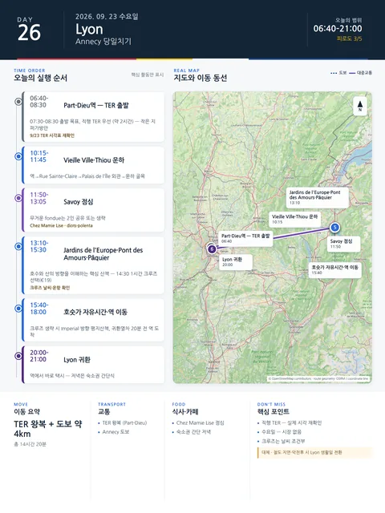

Day 26 · 9/23 수 · Lyon

오늘의 주요 장소

- 핵심 실행
- Annecy 당일치기
- 권장 출발
- 08:00 전후 역 이동
- 완충
- TER 20분 전 도착
- 예약
- 1건 — 완료 0 · 미확정 1 · 현황
시간표
| 시간 | 일정 | 실행 포인트 |
|---|---|---|
| 06:40–07:20 | 숙소 아침·Part-Dieu 이동 | 수하물 없이 작은 지퍼가방만 휴대. 택시 또는 메트로로 역 이동 |
| 07:40 이전 | Part-Dieu 도착 | 열차 20–25분 전 플랫폼 확인 |
| 07:30–08:30 출발 목표 | Lyon→Annecy 직행 TER 우선 | 소요 약 1시간 50분–2시간 10분. 실제 9/23 시간표 재확인 |
| 10:15–11:45 | Vieille Ville·Thiou 운하 | 역→Rue Sainte-Claire→Palais de l’Île 외관→운하 골목 |
| 11:50–13:05 | Savoy 점심 | Chez Mamie Lise에서 diots·polenta 또는 일일메뉴. 무거운 fondue는 2인 공유 또는 생략 |
| 13:10–14:10 | Jardins de l’Europe·Pont des Amours·Pâquier | 호수와 산의 방향을 이해하는 핵심 산책 |
| 14:30–15:30 | 1시간 호수크루즈 선택 | 공식 안내 계획가 성인 €19. 날씨·운항 확인 |
| 15:40–17:15 | 호숫가 자유시간·카페 | 크루즈를 생략하면 Imperial 방향 평지산책 또는 Palais de l’Île 내부 선택 |
| 17:20–18:00 | 역 이동·간단한 간식 | 귀환열차 20분 전 도착 |
| 18:00–19:00대 | Annecy→Lyon 귀환 | 직행 우선, 실제 시각 재확인 |
| 20:00–21:00 | Lyon 도착·숙소 귀환 | 역에서 바로 택시. 저녁은 숙소권 간단식 |
피로도
4/5
이 날의 장소
일자별 시간표와 본문 표기에서 찾은 것이다. 하루의 전부가 아니라 장소 카드가 있는 것만 담는다.
이 날의 메모
Annecy 당일치기 — 운하 구시가지와 알프스 호수
Palais de l’Île와 Thiou 운하
- 설명: 물길 사이의 석조건물, 파스텔색 구시가지와 산 배경이 겹치는 안시의 대표 이미지.
Pont des Amours에서 본 Annecy 호수
- 설명: Jardins de l’Europe, 호수, 산맥이 연결되는 안시의 핵심 풍경.
Annecy 호수 1시간 크루즈
- 설명: 도시 산책만으로는 보이지 않는 호수 주변 산악지형을 수면에서 이해하게 하는 이미지.
SNCF Connect의 현재 노선 안내는 Lyon–Annecy에 하루 약 19편, 평균 약 2시간 7분, 최단 약 1시간 51분이 걸린다고 안내한다. 직행편과 환승편이 섞여 있으므로 2026년 9월 23일에는 07:30–08:30 Part-Dieu 출발의 직행 TER를 우선하고, 실제 편성·공사·파업 여부를 예약 시점과 전날 다시 확인한다.
왕복 철도 약 4시간과 관광 7시간.
중요한 요일 정보
Annecy 구시가지 시장은 화·금·일 07:00–13:00에 열리므로 수요일 9월 23일에는 열리지 않는다. 시장을 대신하려고 외곽 생활권으로 우회하지 않고 운하·호숫가·크루즈에 집중한다.
안시에서 꼭 해볼 것
- Thiou 운하를 따라 골목과 물길이 도시를 어떻게 나누는지 보기
- Palais de l’Île는 외관을 우선하고, 내부는 비·피로 상황에 따라 선택
- Pont des Amours와 Pâquier에서 호수와 산악지형을 길게 바라보기
- Savoy 음식은 fondue 하나에 집중하기보다 diots·polenta, tartiflette, 지역치즈 중 몸 상태에 맞게 선택
- 날씨가 좋으면 1시간 크루즈로 호수도시의 규모를 체감하기
점심 후보
가격은 계획가(2026-08 조사) — 메뉴·구성과 요금은 현장에서 달라질 수 있다. 확정가는 방문 당일 확인한다.
| 식당 | 성격 | 추천메뉴·계획가격 재확인 | 예약 재확인 |
|---|---|---|---|
| Chez Mamie Lise | 구시가지 Savoy 전통식 | 일일요리 약 €19, 메뉴 약 €32.90, diots 약 €26.80, tartiflette 약 €25.50 | 점심 권장 |
| Le Freti | 치즈요리 전문 | fondue, raclette, tartiflette | 점심 예약 권장 |
| 가벼운 대안 | 빵집·샌드위치·샐러드 | 크루즈 전 과식 방지 | 불필요 |
우천·지연 대체안
- 비: Vieille Ville→Palais de l’Île 내부→긴 점심→비가 약해지면 호숫가. 크루즈는 운항 시에만
- 강풍·크루즈 취소: Pâquier·Imperial 구간 평지산책과 카페로 대체
- 열차 지연 60분 이상: 크루즈를 삭제하고 구시가지+호숫가만
- 대규모 철도장애: Lyon의 Confluence·Navigône·Parc 생활일로 대체
상세 실행 확인
- 최고 리스크
- 철도지연·날씨·시장 없음
- 우선 삭제
- 크루즈
- 대체안
- Lyon 생활일로 전환
- 식사·휴식
- Annecy 구시가지
- 잠금 필요
- TER·크루즈
Google 실행지도
Annecy 당일 — TER · Vieille Ville · 호수
지도 펼치기
지도는 펼칠 때만 불러옵니다.
Daily Action Map

실제 좌표와 OpenStreetMap을 사용한 실행용 요약입니다. 도로·대중교통 상황은 출발 직전에 다시 확인하세요.